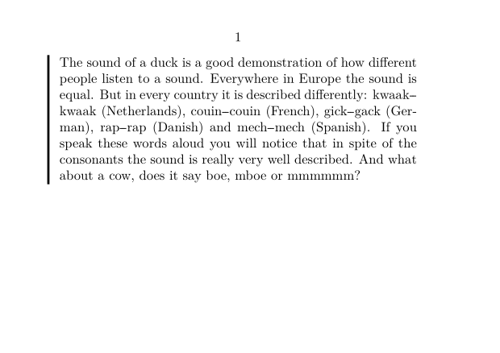
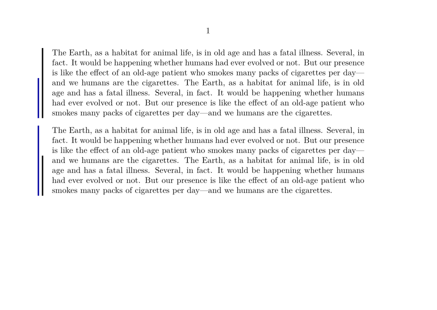

Contents
Summary
The environment \startmarginrule ... \stopmarginrule is puts a rule in the margin
Settings
| \startmarginrule[...] ... \stopmarginrule | |
| [...] | number |
| Option | Explanation |
|---|---|
| number | Default is 1. Higher numbers are moved further into the margin. |
Settings assignment
Description
Puts a rule in the left margin next to a block. This environment can be nested up to five levels. It is a special case of sidebar.
Examples
Example 1
Here is example input:
-
\setuppapersize[A7,landscape] \starttext \startmarginrule The sound of a duck is a good demonstration of how different people listen to a sound. Everywhere in Europe the sound is equal. But in every country it is described differently: kwaak||kwaak (Netherlands), couin||couin (French), gick||gack (German), rap||rap (Danish) and mech||mech (Spanish). If you speak these words aloud you will notice that in spite of the consonants the sound is really very well described. And what about a cow, does it say boe, mboe or mmmmmm? \stopmarginrule \stoptext
Gives:
- 
Nested rules (with a bit of setup)
-
\setuppapersize[A6,landscape] \setupmarginrule[2][rulecolor=darkblue] \starttext \startmarginrule[1] \input ward \startmarginrule[2] \input ward \stopmarginrule \stopmarginrule \blank \startmarginrule[2] \input ward \startmarginrule[1] \input ward \stopmarginrule \stopmarginrule \stoptext
Gives:
- 